靜不定度 d 的判定
0導言
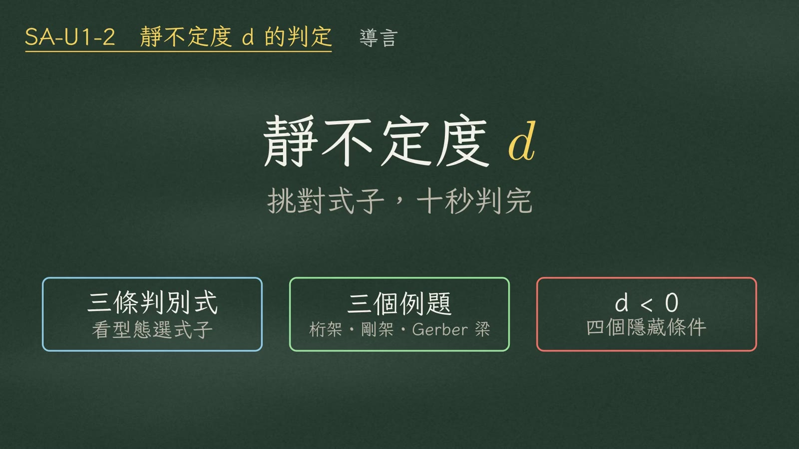
這支影片講結構學第一個關卡：靜定判定，也就是靜不定度 \(d\) 的計算。考場上不需要慢慢數，只要先看結構型態、挑對式子，十秒就能判完。最後再告訴你，算出 \(d<0\) 的時候，要回頭找哪四個隱藏條件。
1核心定義
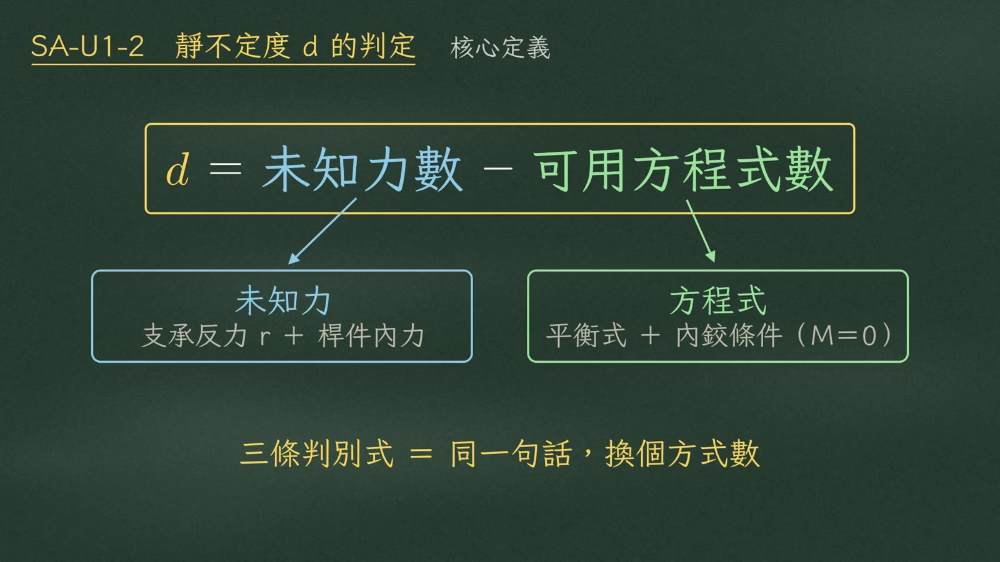
先記住一句話：靜不定度 \(d\)，永遠等於未知力數，減掉可用的方程式數。
未知力包括支承反力和桿件內力；方程式就是平衡式，再加上內鉸送你的條件（\(M=0\)）。三條判別式長得不一樣，但全部都是這句話換個方式數。
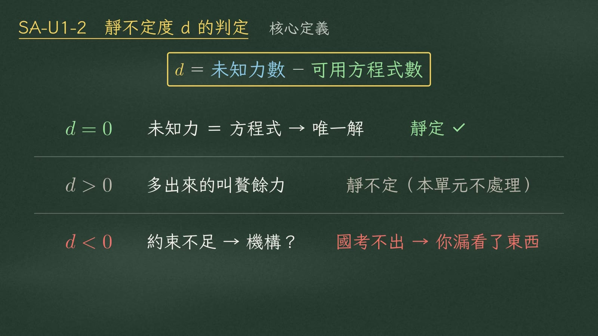
算出來的 \(d\) 分成三類：
| 結果 | 意義 | 結論 |
|---|---|---|
| \(d=0\) | 未知力剛好等於方程式數，只靠平衡就能唯一解出所有反力和內力 | 靜定 ✓ |
| \(d>0\) | 未知力比較多，多出來的叫贅餘力 | 靜不定（不在這個單元） |
| \(d<0\) | 約束不足、是機構 | 國考不出機構題 → 你漏看了東西 |
2三條判別式
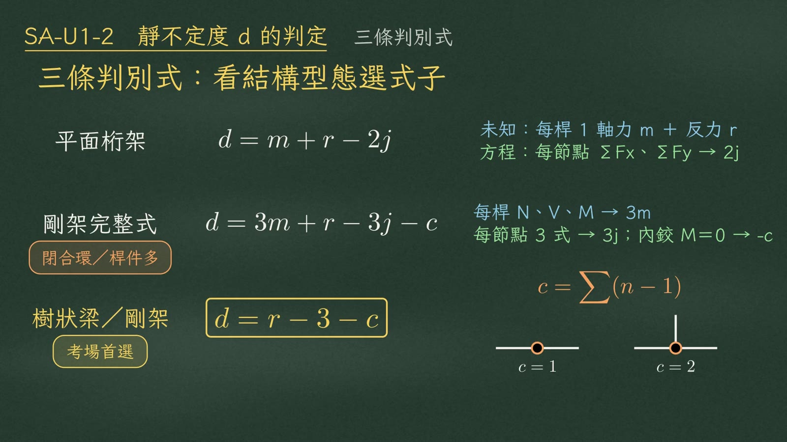
第一條 平面桁架
每根桿只有一個未知軸力，所以未知數是桿件數 \(m\) 加反力數 \(r\)；每個節點可以寫 \(\Sigma F_x\) 和 \(\Sigma F_y\) 兩條平衡式，\(j\) 個節點就有 \(2j\) 條方程式。所有桁架都用這一條。
第二條 平面剛架完整式
剛架每根桿有軸力、剪力、彎矩（\(N、V、M\)）三個內力，所以是 \(3m\)；每個節點有三條平衡式，所以是 \(3j\)。內鉸處彎矩等於零，多給一條方程式，所以再減 \(c\)。有閉合環、或桿件很多的時候，才用這一條。
第三條 樹狀結構簡化式（考場首選）
把整個結構當一塊自由體，未知數只看反力 \(r\)，整體三條平衡式，再加上內鉸釋放數 \(c\)。沒有閉合環的梁和剛架都適用，是考場首選。
\(c\) 怎麼算？一個內鉸如果連接 \(n\) 根桿：
| 內鉸連接 | \(c\) |
|---|---|
| 連 2 根桿 | \(c=2-1=1\) |
| 連 3 根桿 | \(c=3-1=2\) |
| 判別式 | 未知數 | 方程式 | 何時用 |
|---|---|---|---|
| \(d=m+r-2j\) | 每桿 1 軸力 \(m\)＋反力 \(r\) | 每節點 \(\Sigma F_x、\Sigma F_y\) → \(2j\) | 所有桁架 |
| \(d=3m+r-3j-c\) | 每桿 \(N、V、M\) → \(3m\)＋\(r\) | 每節點 3 式 → \(3j\)；內鉸 \(M=0\) → \(-c\) | 閉合環／桿件多 |
| \(d=r-3-c\) | 反力 \(r\) | 整體 3 式＋內鉸 \(c\) | 無閉合環的梁、剛架（首選） |
3例 A 平面桁架
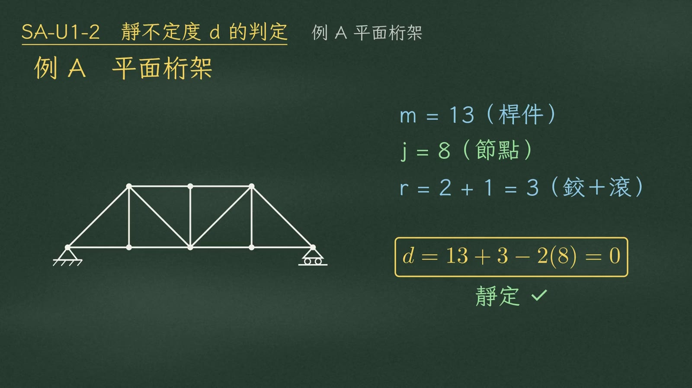
數一數：桿件下弦四根、上弦兩根、兩根端斜桿、三根直桿、中間兩根斜桿，共十三根；節點下弦五個、上弦三個，共八個；左邊鉸支承兩個反力，右邊滾支承一個，\(r=3\)。
| 參數 | 點算 |
|---|---|
| \(m=13\) | 下弦 4＋上弦 2＋端斜桿 2＋直桿 3＋中間斜桿 2 |
| \(j=8\) | 下弦 5＋上弦 3 |
| \(r=3\) | 左鉸 2＋右滾 1 |
4例 B 剛架與閉合環
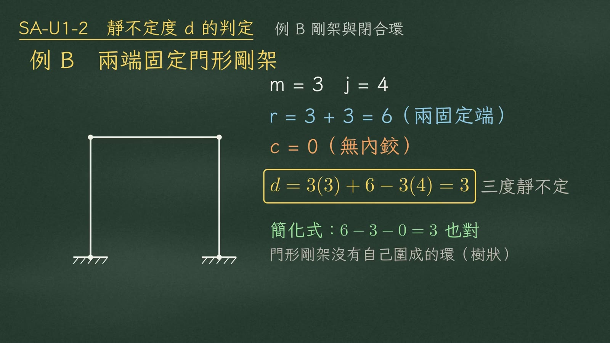
兩端固定的門形剛架。三根桿、四個節點，兩個固定端各三個反力，\(r=3+3=6\)，沒有內鉸，\(c=0\)。用完整式：
其實門形剛架沒有自己圍起來的環，用簡化式 \(6-3-0\)，一樣得到 \(3\)。
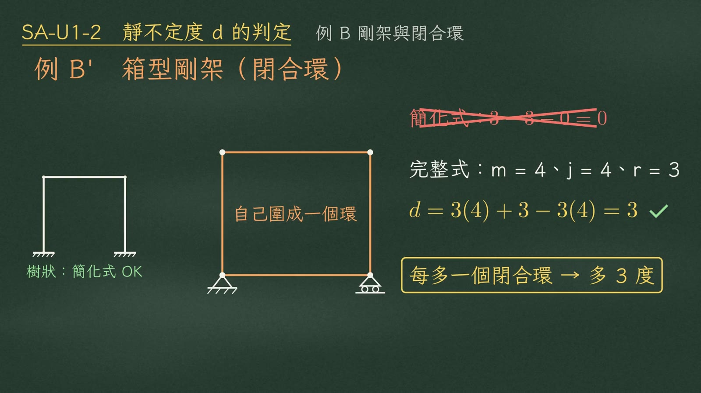
那什麼時候非用完整式不可？是像這種箱型剛架，桿件自己圍成一個閉合環。它一鉸一滾簡支，\(r=3\)，簡化式算出零，看起來靜定，其實錯了。
用完整式：四根桿、四個節點，
| 結構 | 簡化式 \(r-3-c\) | 完整式 \(3m+r-3j-c\) |
|---|---|---|
| 門形剛架（樹狀） | \(6-3-0=3\) ✓ | \(3(3)+6-3(4)=3\) ✓ |
| 箱型剛架（閉合環） | \(3-3-0=0\) ✗ | \(3(4)+3-3(4)=3\) ✓ |
5例 C Gerber 梁
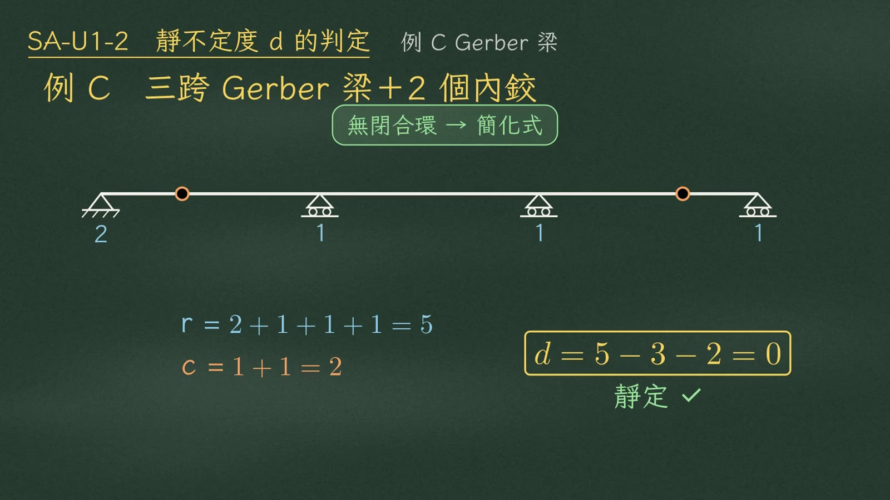
三跨 Gerber 梁，左端鉸支承、另外三個滾支承，中間有兩個內鉸。沒有閉合環，直接用簡化式。\(r=2+1+1+1=5\)；兩個內鉸各連兩根桿，\(c=1+1=2\)。
這種題目用簡化式，真的十秒就判完。
6d<0：四個隱藏條件
① 中央沒有底弦的拱 → 三鉸拱
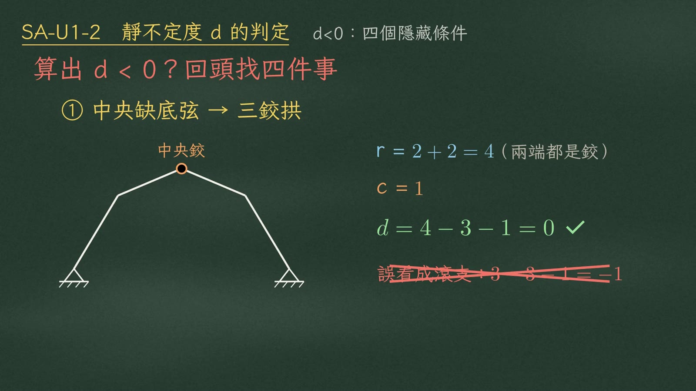
中央沒有底弦的拱，其實是三鉸拱。兩端都是鉸支承，\(r=2+2=4\)；頂部中央鉸 \(c=1\)。
② 圖上的虛線 → 拉力繫索
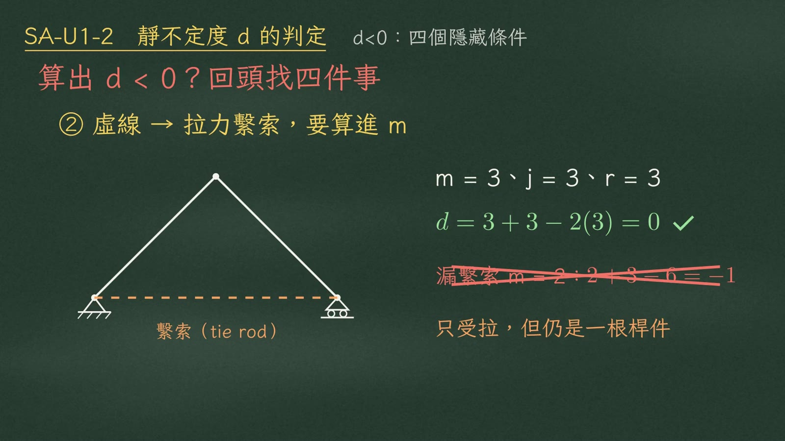
圖上的虛線不是輔助線，是拉力繫索。像這個一鉸一滾的三角形，把繫索算進去，三根桿、三個節點、三個反力：
③ 滾支承靠在斜面或垂直牆上
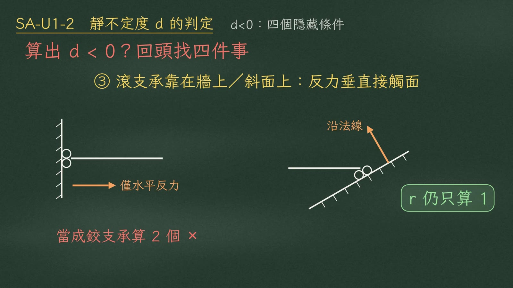
反力方向永遠垂直於接觸面：
| 滾支承位置 | 反力方向 | \(r\) |
|---|---|---|
| 垂直牆上 | 只給水平反力 | 1 |
| 斜面上 | 沿著斜面的法線 | 1 |
不管方向怎麼轉，\(r\) 仍然只算一。
④ 彈簧支承（高頻陷阱）
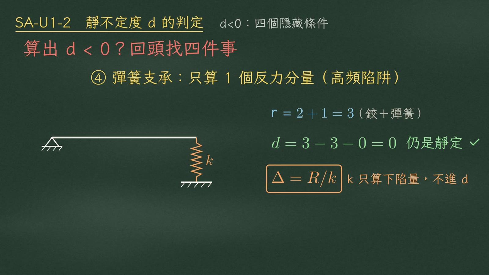
彈簧只提供一個反力分量，和滾支承同級，\(r\) 只算一。左端鉸支承加右端彈簧，\(r=2+1=3\)：
補充：d = 0 只是必要條件
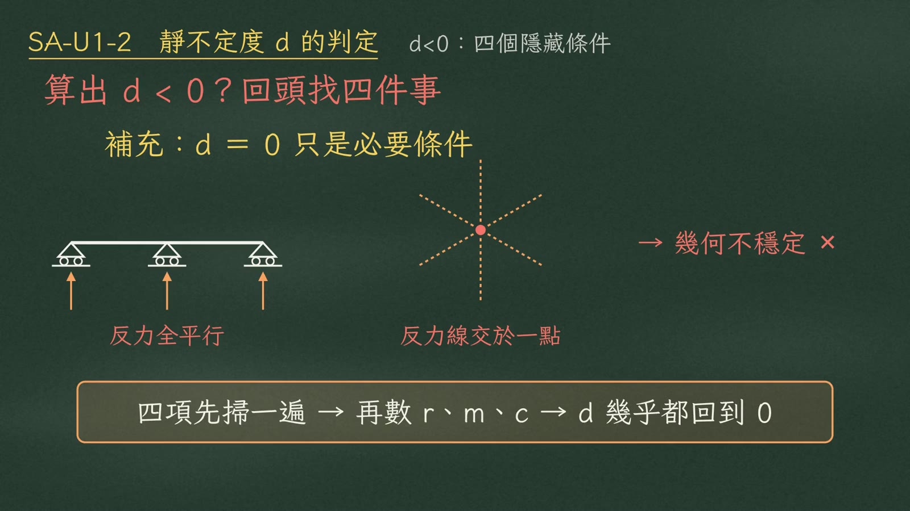
\(d=0\) 只是必要條件。如果反力全部互相平行，或者全部交於一點，結構仍然會幾何不穩定。
7考場 30 秒 SOP
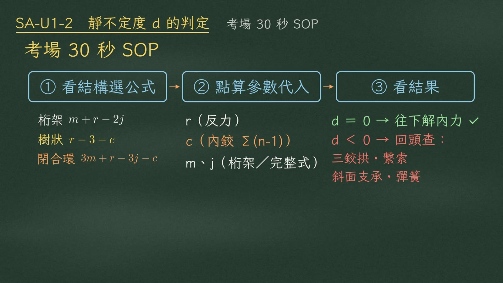
| 步驟 | 內容 |
|---|---|
| ① 看結構選公式 | 桁架用 \(d=m+r-2j\)；沒有閉合環的梁和剛架，用 \(d=r-3-c\)；有閉合環，才用完整式 \(3m+r-3j-c\) |
| ② 點算參數代入 | 點算 \(r\)、\(c\)（內鉸 \(\Sigma(n-1)\)），或 \(m\) 和 \(j\)（桁架／完整式），代進去 |
| ③ 看結果 | \(d=0\)：安心往下解內力；\(d<0\)：回頭檢查三鉸拱、繫索、斜面支承和彈簧 |
8總結
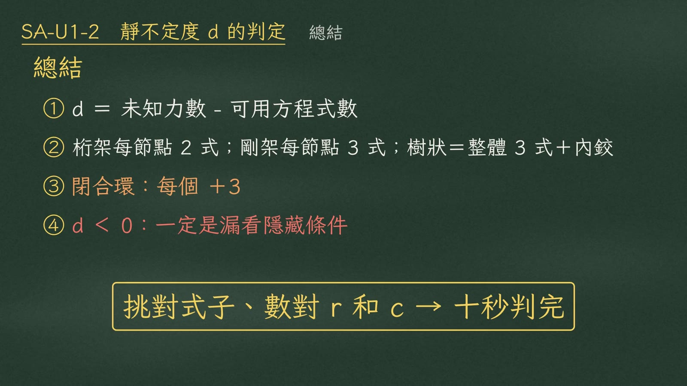
- \(d\) 等於未知力數減可用方程式數。
- 桁架每節點兩式，剛架每節點三式，樹狀結構看整體三式加內鉸。
- 閉合環每個加三。
- 算出負的，一定是漏看了隱藏條件。
黑板用色：藍＝未知力／反力 r、綠＝方程式／正確、橘＝內鉸 c、繫索、閉合環、紅＝常見錯誤。